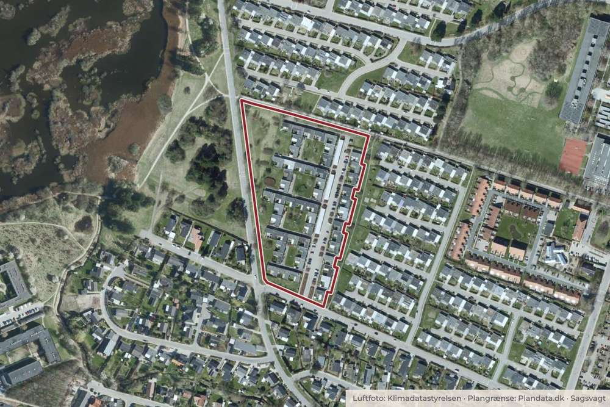

Behandlet 23. november, Miljø-, Klima- og Teknikudvalget, Herlev
Endelig vedtagelse af Lokalplan 34-1 for et område øst for Grønsvinget og nord for Vingetoften

Kort: © OpenStreetMap-bidragydere. Plangrænse: Plandata.dk, Herlev Kommune.

Kort fortalt
- Hvem
- Miljø-, Klima- og Teknikudvalget, Herlev Kommune
- Hvornår
- Mandag 23. november 2026
- Status
- Behandlet. Referatet med beslutningen er ikke offentliggjort endnu.
Er noget forkert her? Skriv til os
Læs hele sagen Kommunens egen tekst
Indstilling
FORVALTNINGEN INDSTILLER,
at lokalplan 34-1 for et område øst for Grønsvinget og nord for Vingetoften vedtages.
Sagsfremstilling
Lokalplan 34-1 for et område øst for Grønsvinget og nord for Vingetoften, er et tillæg til lokalplan 34 af
samme navn. Tillægget regulerer alene muligheden for, at etablere fire fælles carporte og dertilhørende
skure i området.
Lokalplan 34-1 regulerer carportenes omfang og placering, samt carportenes fremtræden som lette og
ensartet bebyggelser, der ikke skaber genskin til gene for områdets beboere.
Forslag til lokalplan 34-1 for et område øst for Grønsvinget og nord for Vingetoften har været i offentlig
høring fra den 10.september 2026-8. oktober 2026. I høringsperioden har der været afholdt borgermøde
den 24. september.2026.
Der er vedhæftet et notat med opsamling på borgermødet. Der er i høringsperioden indkommet ni
høringssvar til lokalplanen fra borgere, HOFOR og Vestforbrændingen.
Hvidbog med høringssvar samt forvaltningens behandling af høringssvarene er vedhæftet.
Høringssvarene omhandler særligt gener fra genskin fra carportene samt højden på carportene, som af
flere vurderes at være for høj.
Høringssvarene har givet anledning til en enkelt ændring til lokalplanen. Ændringen er en præcisering af
bestemmelsen omkring genskin og hvordan dette måles. Præciseringen fremgår af hvidbogen.
Lokalplan 34-1
Lokalplan 34-1 for et område øst for Grønsvinget og nord for Vingetoften er vedhæftet og kan tilgås i
Herlev Kommunes digitale planportal DKplan:
https://herlev.viewer.dkplan.niras.dk/DKplan/DKplan.aspx?LokalplanId=189
Leder af Byplan Tine Ane Nielsen deltager under punktets behandling.
Økonomi
Sagen medfører ikke bevillingsmæssige ændringer.
Kilde: Herlev Kommune, Miljø-, Klima- og Teknikudvalget, dagsorden fra mødet mandag 23. november 2026, punkt 7. Læs den originale sag hos kommunen.